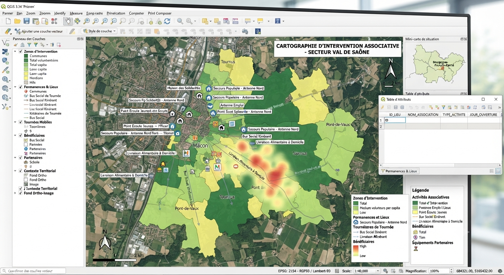
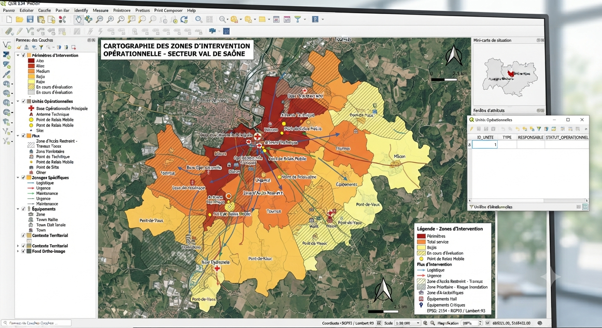
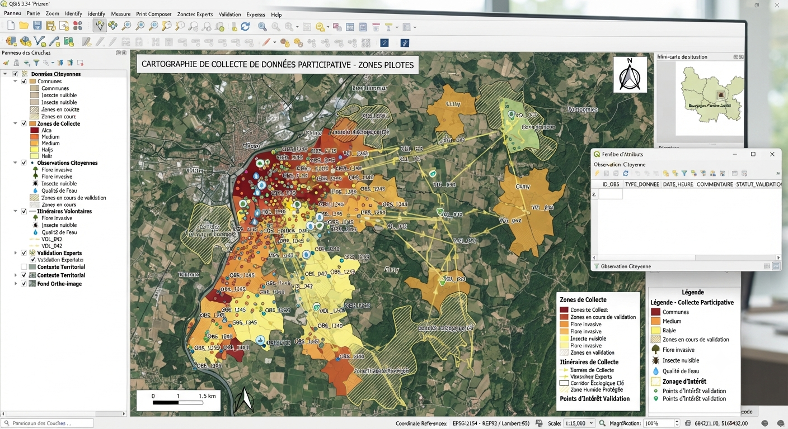
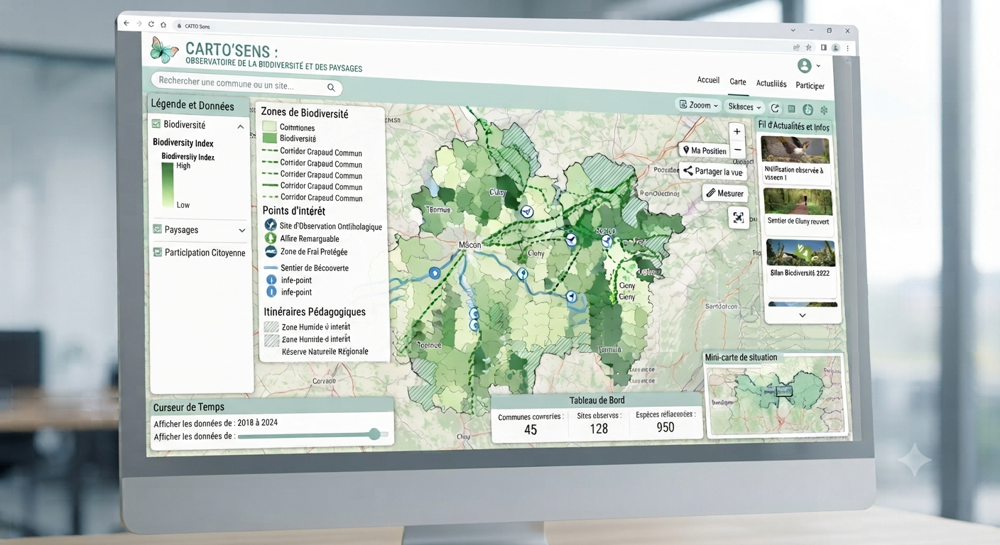
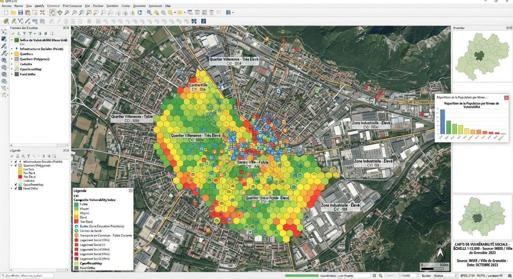
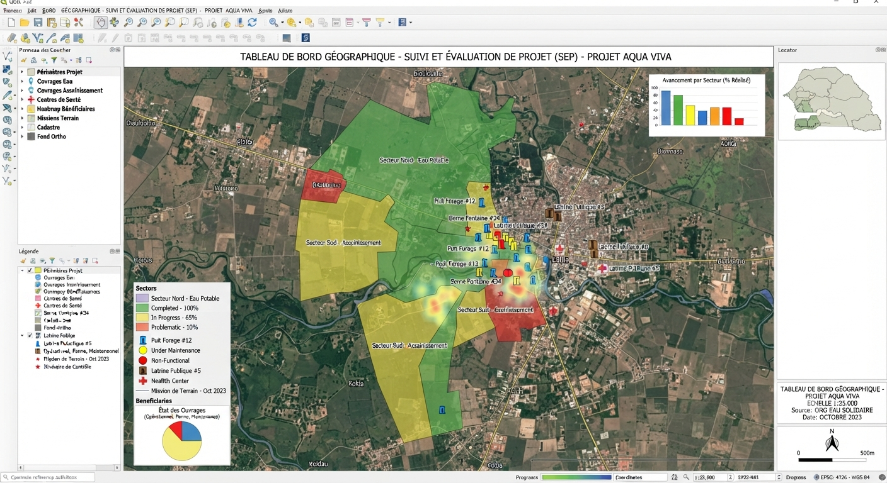
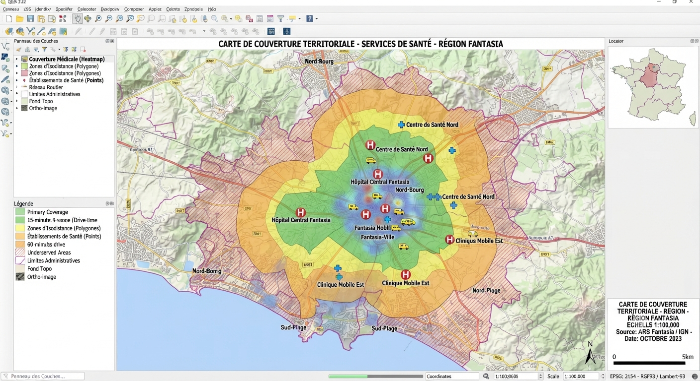

Association loi 1901, fondation, ONG humanitaire : votre budget est serré, vos financeurs veulent des preuves visuelles d'impact et votre terrain d'action dépend souvent de bénévoles. La cartographie n'est pas un gadget : c'est l'outil qui priorise l'action, prouve l'impact et convainc les bailleurs.
Un rapport d'activité avec une carte parle plus vite qu'un tableau de chiffres, autant à un donateur particulier qu'à un comité de sélection de subventions.
Nous adaptons le niveau technique et le tarif à la réalité associative : pas de solution surdimensionnée pour une structure qui fonctionne avec des bénévoles.


Délimitation précise des secteurs couverts par vos actions, pour affecter les bonnes ressources au bon endroit.

Collecte de données terrain par vos bénévoles via des applications simples (ODK, KoboToolbox), centralisée automatiquement.

Carte interactive publique racontant votre action, intégrable directement sur votre site ou vos réseaux.

Croisement de données socio-démographiques pour identifier les zones et publics les plus fragiles.

Cartographie de l'avancement de vos projets terrain, actualisée pour vos comités de suivi et vos financeurs.

Vue d'ensemble démontrant l'étendue réelle de vos actions sur un territoire donné.
Décrivez votre mission, nous adaptons la solution à votre budget.